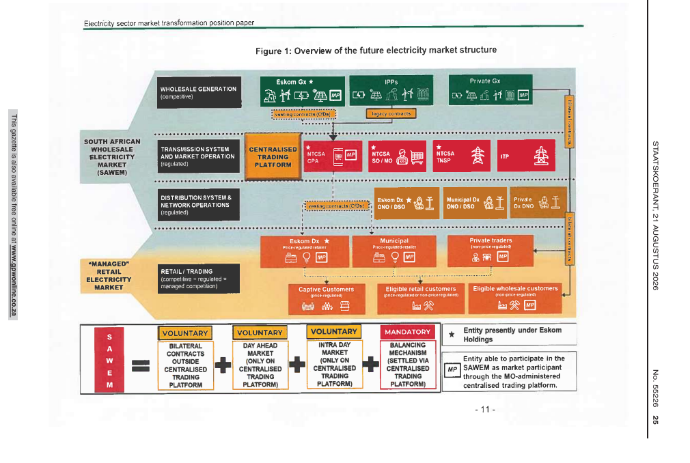

Bills & Legislation · Department of Electricity and Energy
The department’s 21 August 2026 statement of how unbundling, the independent TSO and SAWEM are supposed to sequence.
Open for comment — due 28 Oct 2026
| Authority | Department of Electricity and Energy |
|---|---|
| Date | 21 August 2026 |
| Comments due | 28 October 2026 — GN 7948 / GG 55436 extended comments on this paper together with the Revised EPP |
| DEE position paper | |
| Related | ERTT Phase I independent TSO endorsement, 31 July 2026 · Eskom Green launch, 9 June 2026 |
A position paper, not a statute. It is DEE’s public map of electricity-supply-industry reform: Eskom stays state-owned but must compete in renewables; the Transmission System Operator is state-owned and independent of Eskom; the wholesale market is opened in a sequence that does not break the lights or the balance sheet.
Eskom’s 2026 integrated report says the competitive wholesale platform’s full external launch is deferred to the latter half of FY2027. The paper is the political sequencing; the NERSA consultations on this Bills page are the regulatory sequencing. They are not the same timetable.
